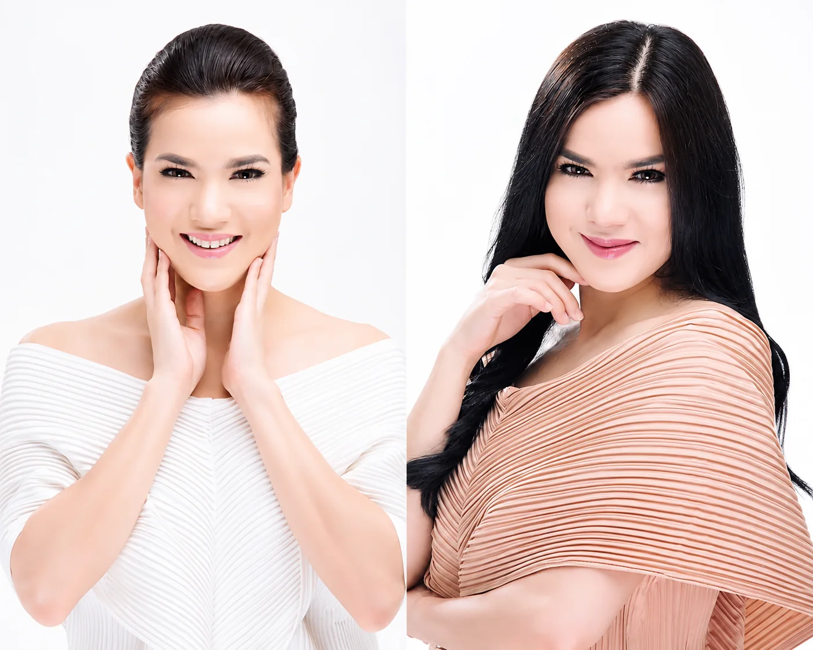
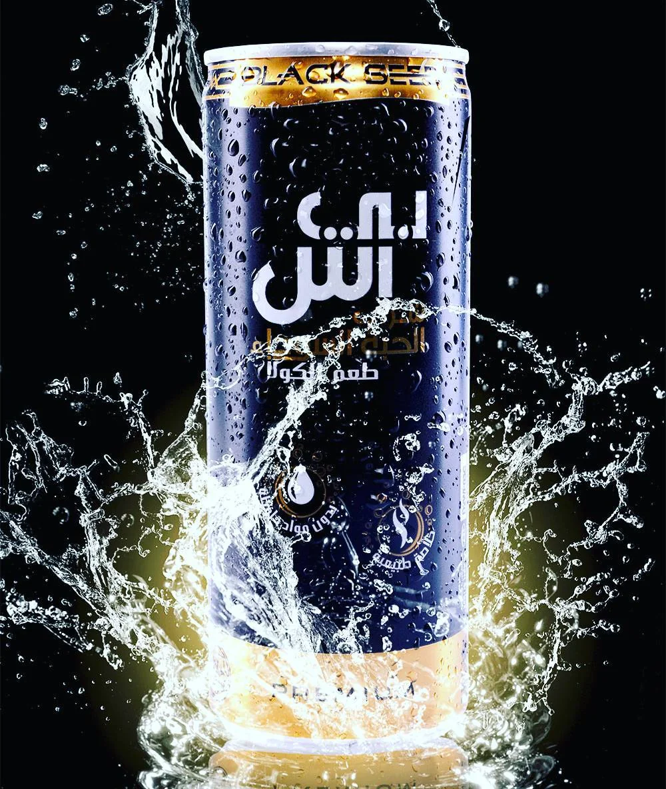

Production & Direction
Program direction, field direction, camera and production coordination for live, corporate and event environments.
Founder & Creative Director — NUSAKARA CREATIVE
 PORTRAIT / SOBRI MUSTOFA
PORTRAIT / SOBRI MUSTOFABroadcast-rooted creative production professional with hands-on experience across live events, video, photography, corporate, commercial and digital work.
Program direction, field direction, camera and production coordination for live, corporate and event environments.
Creative direction, content development, scripting and visual thinking from brief to delivery.
Content and digital work where creative execution needs to connect with communication and business context.
Production-minded. Business-aware.
From brief breakdown to final delivery.
Clear delegation, calm coordination and strong quality control.
Selected production experience leads the portfolio. Each project is presented around the role, scope and evidence currently available.
 LIVE EVENT / PRODUCTION
LIVE EVENT / PRODUCTIONCamera setup · camera operation · photography · screen · audio · artist coordination · program direction.
VIEW CASE STUDY ↗ EVENT / BROADCAST
EVENT / BROADCASTProgram Director · Multimedia production.
VIEW CASE STUDY ↗ EVENT / BROADCAST
EVENT / BROADCASTProgram Director · Multimedia production.
VIEW CASE STUDY ↗End-to-end event production case. The current evidence supports positioning the work around concept, planning, production, technical coordination, program, on-ground execution and completion — without inventing attendance or commercial results.
VIEW CASE STUDY ↗Selected commercial and social visuals from the working archive. Project roles, clients and outcomes are intentionally not overstated where the current evidence does not document them.




My creative practice grew from broadcast and real-world production environments — where ideas have to survive briefs, schedules, teams, pressure and delivery.
Since 2015, I have worked across videography, photography, directing, scripting, corporate communications, live events and digital creative. Today I combine production discipline with strategic thinking through independent work and NUSAKARA CREATIVE, where my work extends from production and content into digital, brand and business-facing projects.
Creative / production / content / branding / digital solutions.
Commercial / corporate / broadcast / event / government / BUMN / digital.
Studio and field production.
News / talk show / documentary / educational / variety / live event.
Videography / photography / editing / copywriting exposure.
Program directing · field direction · production leadership
Video · photography · live event · corporate · commercial
Creative strategy · content direction · communication thinking
Content development · scripting · digital creative
Premiere Pro · Final Cut Pro · After Effects · Photoshop · Lightroom
Instagram Insights · Socialinsider · ChatGPT · Claude
For production, program direction, creative direction, content or selected digital work, send the brief and I will respond with the right next step.